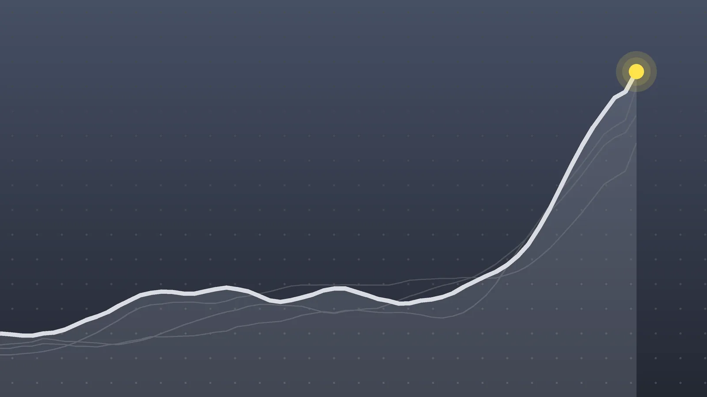

PoliticsExplainer
Midterm Elections 2026: What’s at Stake on Tuesday, Nov. 3
Democrats need a net gain of just three House seats and four Senate seats to take control, and almost 45 million people had voted before the final weekend.

Quick take
- Election Day is Tuesday, Nov. 3, 2026, with all 435 House seats, 35 Senate seats and 36 governorships on the ballot.
- Republicans hold the House 218-214 with two vacancies and the Senate 53-47, so Democrats need net gains of 3 House seats and 4 Senate seats.
- About 44.8 million Americans had voted early by the evening of Oct. 29, according to the University of Florida Election Lab.
- CBS News rates five Senate races as toss-ups: Maine, Michigan, Ohio, Texas and Alaska.
Why it's trending The 2026 U.S. midterm elections are on Tuesday, Nov. 3, and campaigns are in their final weekend.
What happened
The 2026 midterm elections are on Tuesday, Nov. 3, and the campaigns are in their last weekend. Every one of the 435 voting seats in the House is up, along with 35 Senate seats and governor’s races in 36 states, Al Jazeera reports. The results will decide which party controls Congress for the final two years of President Donald Trump’s second term.
A lot of people have already voted. By Thursday evening, Oct. 29, about 44.8 million ballots had been cast, according to University of Florida Election Lab figures cited by CBS News. Mail ballots made up about 21.3 million of that total, and early voting at polling places accounted for about 23.6 million.
Both parties are making final pushes. CBS News reports Trump held a rally in Daytona Beach, Florida, on Friday and planned rallies in Iowa and Kansas on Sunday, plus phone-in “tele-rallies” covering 19 states.
The midterm math: what each party needs
Republicans control both chambers now, but by thin margins in the House. Here’s the current lineup, from Al Jazeera’s count:
| Chamber | Republicans | Democrats | Other | Needed for control |
|---|---|---|---|---|
| House (435) | 218, plus 1 independent who sits with them | 214 | 2 vacant seats | 218 |
| Senate (100) | 53 | 47 (45 plus 2 independents) | none | 51, or 50 plus the vice president |
In plain terms:
- House: Democrats need a net gain of three seats. That’s a small number by historical standards. Since 1946, the party holding the White House has given up 26.5 House seats on average in midterms, Al Jazeera notes. Republicans could lose far fewer seats than that average and still lose the House.
- Senate: Democrats need a net gain of four seats to reach 51. A 50-50 split would leave Republicans in charge, because Vice President JD Vance casts tie-breaking votes. Of the 35 Senate seats on the ballot, Republicans currently hold 22 and Democrats 13, so Republicans have more seats to defend.
The House picture also shifted before a single vote was cast. Ohio and Utah are using new court-ordered district maps, while Missouri, North Carolina and Texas redrew their maps in the middle of the decade and California adopted a new map after voters passed Prop 50, according to Wikipedia’s summary of the 2026 elections. Missouri’s map is still in dispute.
The Senate races to watch
CBS News is tracking 11 Senate battlegrounds. It rates five as toss-ups, three as leaning Republican and three as leaning Democratic:
| CBS News rating | States |
|---|---|
| Toss-up | Maine, Michigan, Ohio, Texas, Alaska |
| Lean Republican | Iowa, Kansas, South Carolina |
| Lean Democratic | Georgia, North Carolina, New Hampshire |
A few matchups getting the most attention:
- Maine: Republican Sen. Susan Collins faces Democrat Troy Jackson. Wikipedia’s overview notes Maine is the only Republican-held seat up this year in a state Kamala Harris won in 2024.
- Michigan: An open seat, with Democrat Abdul El-Sayed against Republican Mike Rogers.
- Alaska: Republican Sen. Dan Sullivan faces Democrat Mary Peltola. An independent candidate named Daniel J. Sullivan, who shares the senator’s name, is also on the ballot. The Justice Department wants a federal court to make Alaska keep ballots that list him separate; state officials oppose that request, and Peltola denies any role in recruiting him, CBS News reports.
- Georgia: Democratic Sen. Jon Ossoff faces Republican Mike Collins. If no one wins a majority, Georgia holds a runoff on Dec. 1.
- North Carolina and New Hampshire: Both are open seats. In North Carolina it’s Democrat Roy Cooper against Republican Michael Whatley; in New Hampshire, Democrat Chris Pappas against Republican John Sununu.
- South Carolina: Rated as leaning Republican by CBS News, but a New York Times/Siena College poll released Oct. 28 showed the race tied.
Two Senate contests are special elections for seats filled by appointment: Florida, where Republican Sen. Ashley Moody faces Democrat Angie Nixon, and Ohio, where Republican Jon Husted holds the seat.
Early voting is running ahead of 2022
The early vote has grown fast. On Oct. 26, Newsweek reported that more than 28 million people had voted early. By the evening of Oct. 29 the count was about 44.8 million. That’s roughly 16 million more ballots in about three days, or around 5 million a day.
Newsweek said national early voting was running ahead of 2022. Texas was up 74% from the same point in 2022, according to an AP analysis it cited, and Kansas’ early total had more than doubled. Texas alone had passed 4 million early ballots by Oct. 26, more than any other state.
For context, about 210 million Americans are registered to vote, according to Al Jazeera, so the early vote by Oct. 29 equals about 1 in 5 registered voters. Midterm turnout has averaged about 42% since 1944, compared with about 58% in presidential years, Al Jazeera notes.
Polls and the national mood
Polls have generally favored Democrats on the question of which party should control Congress. A Pew Research Center survey taken Sept. 28 to Oct. 4 found 44% of registered voters backing the Democratic candidate in their district and 36% the Republican, with 15% unsure, according to Al Jazeera. CBS News says its latest poll gives Democrats an edge in the House race, while control of the Senate could come down to the toss-ups.
Issues in the campaign include fuel prices, which rose after the war with Iran began on Feb. 28, according to Wikipedia’s election summary. (For background, see our explainer on oil prices.)
Legal fights over ballots
Several disputes over how ballots are handled are still in court:
- California: A divided federal appeals court panel turned down the Justice Department’s bid to have California put contested mail ballots aside, and a federal judge issued a temporary order barring federal officials from demanding that ballots be separated, CBS News reports. The department says roughly 20,000 people it identified may be noncitizens, which California disputes.
- Alaska: A ruling on the request to separate ballots that list independent Daniel J. Sullivan was sought by Monday.
- Records: The Justice Department says it sent letters to all 50 states about keeping election records for 22 months.
What happens next
- Tuesday, Nov. 3: Election Day. Polls begin closing in the evening, starting at 6 p.m. ET in the first states.
- Election night and beyond: Close races could take days to call, and some states may need a week or more to count mail and provisional ballots, Al Jazeera reports. Pennsylvania can’t start processing mail ballots until 7 a.m. on Election Day, so it may be among the last to finish, according to CBS News.
- Watch for a “red mirage”: Because Republicans have historically voted by mail less often, early counts in some states can lean Republican before later-counted mail ballots shift the totals. Early leads aren’t final results.
- Dec. 1: Georgia’s Senate runoff, if needed.
- Jan. 3, 2027: The newly elected Congress is sworn in.
Quick answers
When is Election Day 2026?
Tuesday, Nov. 3, 2026. Many states also allowed early in-person or mail voting, and about 44.8 million people had voted by Oct. 29.
How many seats do Democrats need to flip the House and Senate?
A net gain of three seats for a House majority and four seats for a Senate majority. A 50-50 Senate would stay Republican because the vice president breaks ties.
When will we know who won?
Some races will be called on election night, but close contests and states that count mail ballots slowly could take days. Control of either chamber may not be clear on Tuesday night if the margins are tight.
Sources
- CBS News 2026 elections live updates as Trump rallies Florida voters, El-Sayed clashes with StevensOct. 31, 2026
- Al Jazeera US midterms 2026: All you need to know in maps and chartsOct. 26, 2026
- Newsweek Map shows states with most early voters so farOct. 26, 2026
- Wikipedia 2026 United States elections
Keep reading
Election Workers: Judge Bars DOJ and DHS Threats Before Midterms
A judge barred DOJ and DHS from threatening election workers over ballots the government calls ineligible. What the order does and how long it lasts.

Comey Charged a 3rd Time Over a 2016 Leak to The New York Times
James Comey charged again: the Justice Department accuses the ex-FBI director of leaking defense information in 2016. Here’s the case and the deadline fight.
Machado Returns to Venezuela After 10 Months, Pushes for a Vote
María Corina Machado returned to Venezuela on Oct. 25 after 10 months abroad. Here’s how she got back, why it matters and where the push for elections stands.